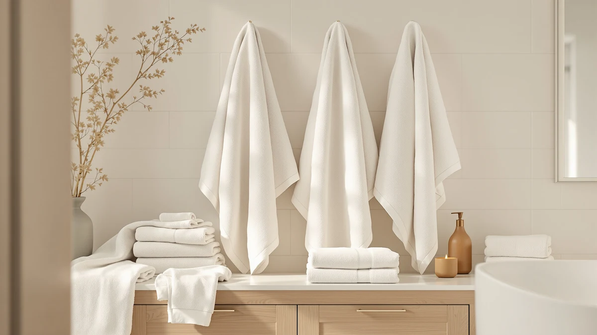

Bath Towels vs Kitchen Towels: Which Is Better? (2026)
Prices and picks verified as of October 2026. Independent, reader-supported reviews.


Things to Know Before You Buy
- They solve different drying jobs. Bath towels dry your body after a shower, while kitchen towels dry dishes, hands, and counters, so the bath towels vs kitchen towels choice rarely needs to be either-or.
- Size and weight differ by design. A bath towel runs around 27 by 52 inches at 500 to 700 GSM, while a kitchen towel is closer to 16 by 28 inches and woven thinner so it releases dishwater fast.
- Material overlaps, but finish does not. Both categories use cotton, but kitchen towels often add a flat weave or waffle weave for scrubbing, a texture you rarely see on a plush bath towel.
- Hygiene rules are stricter in the kitchen. A kitchen towel touches raw food surfaces and needs washing every one to two days, well ahead of the once-a-week schedule that works for bath towels.
- Price per piece favors the kitchen towel. A set of kitchen towels usually costs less per towel than a bath towel of comparable cotton quality, since kitchen towels use less fabric.
The choice between bath towels vs kitchen towels seems obvious until laundry day, when you find a hand-me-down bath towel doing dish duty and a dish towel drying someone's hair. Both categories start from the same raw material, cotton, but a manufacturer weaves, cuts, and finishes them for two completely different rooms.
Size, weave, absorbency, and wash frequency are what actually separate the two categories. By the end of this comparison you will know which towel belongs on your bathroom bar and which one belongs folded over your oven handle, plus three bath towel sets worth adding to your rotation.
Quick Answer
Bath towels win for drying your body: thicker pile, bigger surface area, and a softer finish built for skin. Kitchen towels win for drying dishes and counters fast, since a thinner weave releases water and dries between uses instead of staying damp on a hook. Most households need both, not a single towel pulling double duty.
What is Bath Towels?
A bath towel is the everyday piece you reach for the moment you step out of the shower. Standard sizes run around 27 by 52 inches, large enough to wrap around an adult body or rub down fully in a few passes. Weight is measured in grams per square meter, or GSM, and a towel in the 500 to 700 GSM range feels plush while still drying out between uses.
Most bath towels use 100 percent cotton, Turkish cotton, or a cotton-polyester blend, woven into loops that trap water against the fiber. That looped pile gives a bath towel its softness and absorbency, but it also means a heavier towel takes longer to dry on the bar. In the bath towels vs kitchen towels comparison, this is the category built around skin contact and comfort, not around wiping a counter or handling a hot pan. A bath towel has no scrubbing texture and no quick-release weave, because neither quality matters when you are patting yourself dry.
What is Kitchen Towels?
A kitchen towel is a smaller, thinner cloth built to dry dishes, wipe counters, and handle the daily mess of a working kitchen. Typical sizes run about 16 by 28 inches, small enough to keep folded on an oven handle or stuffed in a drawer without taking up much room. Where a bath towel prioritizes plush pile, a kitchen towel prioritizes a flatter weave, waffle weave, or terry construction that releases water quickly instead of holding onto it.
Cotton is still the dominant material, but you will also find linen and linen-cotton blends in kitchen towels, prized for drying glassware without leaving streaks. Many kitchen towels sew a hanging loop into one corner, a detail you almost never see on a bath towel. In the bath towels vs kitchen towels split, the kitchen towel handles frequent, fast use throughout the day: wiping hands, catching drips, lining a bowl while bread rises. It trades the soft, absorbent bulk of a bath towel for a cloth that dries fast enough to stay sanitary.
Head-to-Head: Build Quality & Durability
Durability plays out differently for each category because of what they survive day to day. A bath towel goes through a wash cycle every few uses and faces mostly water and body soil, so a well-made 600 GSM cotton towel can hold its loop structure and softness for three to five years. A kitchen towel faces a tougher mix: grease, food stains, bleach from sanitizing washes, and near-daily laundering, all of which wear down fibers faster than a bath towel ever experiences.
In the bath towels vs kitchen towels durability comparison, construction matters as much as material. A looped terry bath towel resists pilling better than a flat-weave kitchen towel, which can fray at the edges after repeated high-heat washing. Linen kitchen towels push back against that wear better than cotton ones, since linen fiber gets stronger when wet, though it costs more per towel. Reinforced hems and double-stitched corners extend life in both categories, but a kitchen towel works harder per week than a bath towel does, so expect to replace kitchen towels roughly twice as often even with similar cotton quality on both sides.
Head-to-Head: Price & Value
Price per piece favors kitchen towels, since they use less fabric and simpler finishing. A set of six cotton kitchen towels often costs $12 to $20, while a comparable set of bath towels in similar cotton quality runs $30 to $50 for the same count, mostly because of the extra material in each piece. Looking at bath towels vs kitchen towels on a cost-per-year basis changes the math slightly: kitchen towels need replacing more often due to heavier use and more frequent washing, which narrows the gap over a three-year span.
Bulk buying helps both categories. A 12-pack of kitchen towels usually beats the per-unit price of buying two 6-packs, and the same logic applies to bath towel sets bought in sixes or eights rather than as singles.
Head-to-Head: Use Experience
Day to day, the bath towels vs kitchen towels difference shows up in two separate rituals. You reach for a bath towel once or twice a day, right after a shower, and a good one soaks up water in a few passes without leaving lint on damp skin, then hangs on a bar long enough to dry before your next use. The experience is slow and occasional: fewer touches, but each one needs to feel right against your body.
A kitchen towel gets pulled off its hook ten or more times a day: drying a mug, wiping a spill, lining a colander, pulling a hot pan off the stove. That frequency means a kitchen towel needs to dry fast between uses, or it turns into a damp, slightly sour-smelling rag by evening. You also want multiple kitchen towels in rotation, since one towel handling dishes, counters, and hands all day stops being sanitary fast. Reviewers consistently note that waffle-weave kitchen towels dry noticeably faster on a hook than flat cotton ones, a small detail that matters when you reach for the same towel ten times before dinner.
When to Choose Bath Towels
Prioritize bath towels first if your current stack is thin, scratchy, or mismatched from years of hard water and cheap detergent. In the bath towels vs kitchen towels priority list, bath towels touch your skin every single day, so an upgrade pays off in comfort you notice right after your next shower. Stocking a guest bathroom, a dorm room, or a short-term rental is another good reason to buy bath towels first, since a fresh, matching set signals quality faster than almost anything else in the room. If your kitchen towels still dry fast and show no major staining, put this month's budget toward bath towels and revisit the kitchen later.
When to Choose Kitchen Towels
Prioritize kitchen towels first if yours have gone stiff, stained, or sour-smelling no matter how often you wash them. In the bath towels vs kitchen towels priority list, a worn-out kitchen towel raises a hygiene problem, since it touches food surfaces, raw ingredients, and hands throughout the day. Households that cook daily or run a busy kitchen should keep at least eight kitchen towels in rotation so one is always clean and dry. You also want new kitchen towels if you recently started cooking more at home, since demand on your current stack has likely outgrown what you bought years ago.
Our Top Picks
Whichever side of the bath towels vs kitchen towels decision sent you here, these three bath towel sets are worth a look if your bathroom stack needs an upgrade.

Editor's Pick
Luxury White Bath Towel Set
A classic white cotton set that owners praise for staying soft wash after wash, a dependable pick if you want your bathroom towels to look hotel-fresh without special care instructions.
$35.99
Check Price on Amazon
Best Value
American Soft Linen Luxury 6
A six-piece set that pairs two bath towels with hand towels and washcloths, a practical value pick for households that want a matching set without buying each size separately.
$39.99
Check Price on Amazon
Premium Choice
Utopia Towels 8 Piece Luxury
An eight-piece ring-spun cotton set that covers bath towels, hand towels, and washcloths at once, worth the step up if you are outfitting more than one bathroom.
$29.99
Check Price on AmazonWhat is the main difference between a bath towel and a kitchen towel?
The main difference in the bath towels vs kitchen towels comparison is size and weave.
Can you use a bath towel as a kitchen towel?
You can in a pinch, but a bath towel's thick loop pile holds onto water and takes longer to dry on a hook, which lets bacteria build up faster than it would on a thinner, quick-drying kitchen towel.
Frequently Asked Questions
What is the main difference between a bath towel and a kitchen towel?
Can you use a bath towel as a kitchen towel?
Why do kitchen towels dry faster than bath towels?
How often should you wash kitchen towels versus bath towels?
Are linen kitchen towels better than cotton ones?
Final Verdict
There is no single winner in the bath towels vs kitchen towels matchup, because each one is built for a different room and a different job: your body on one side, your dishes and counters on the other. If your current bath towels have gone thin or scratchy, start there with a set like the White Classic Luxury White Bath Towel Set above, then handle your kitchen towel drawer on a separate budget cycle.